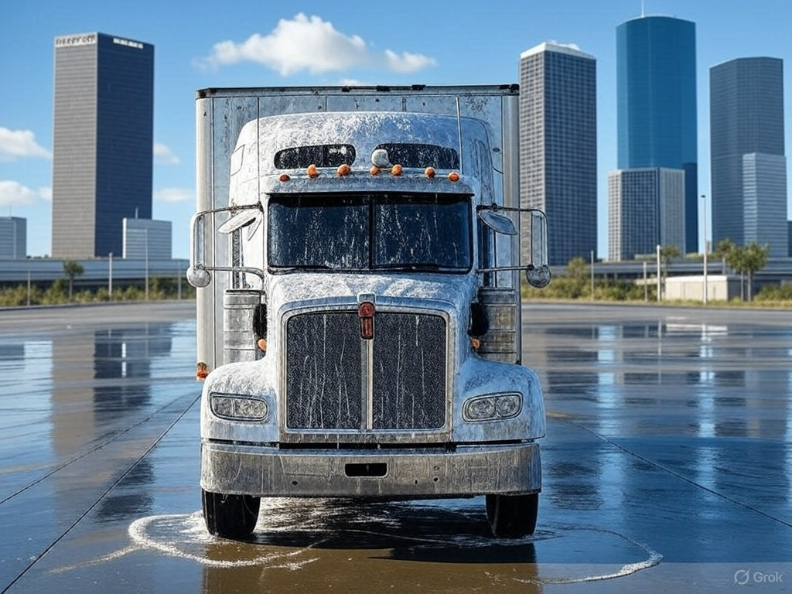

Our Local Facilities
Professional truck wash facilities at convenient locations
Starting from $49.99
Dallas Facility
2505 South Good Latimer Expressway, Dallas, TX 75226
- Open 24/7
- (214) 555-0123
- Multiple wash bays available

Chicago Facility
3750 S California Ave, Chicago, IL 60632
- Mon-Sun: 6AM-10PM
- (312) 555-0456
- Indoor washing facility

Houston Facility
8500 Clinton Dr, Houston, TX 77029
- Open 24/7
- (713) 555-0789
- High-capacity facility

Atlanta Facility
1750 Marietta Rd NW, Atlanta, GA 30318
- Mon-Sun: 5AM-11PM
- (404) 555-0321
- State-of-the-art equipment